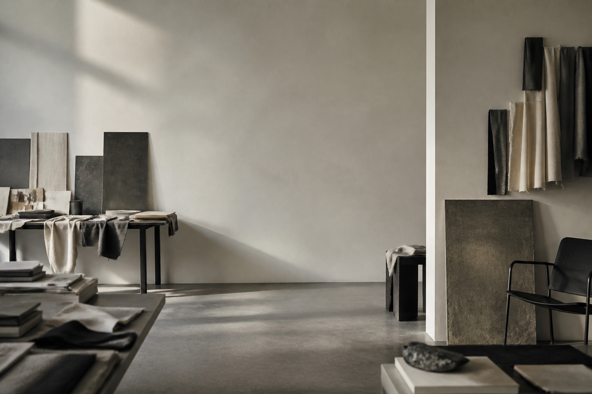
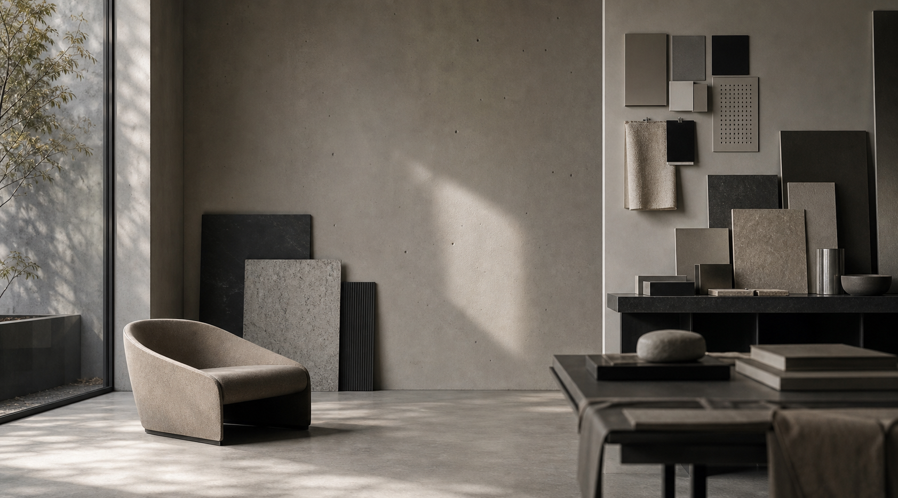
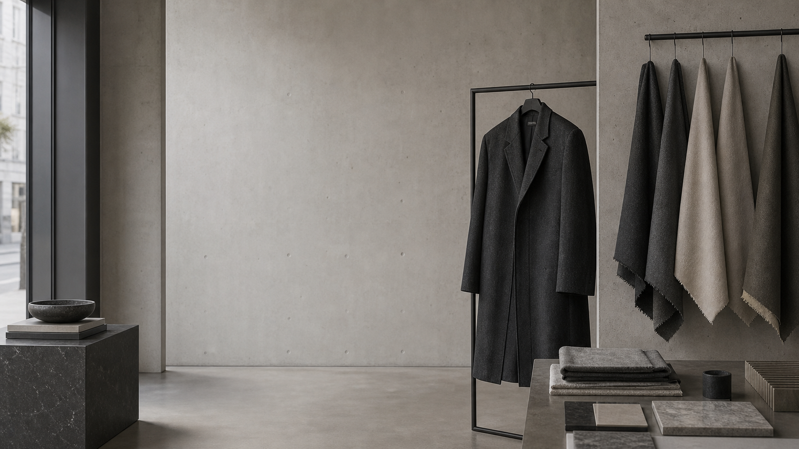
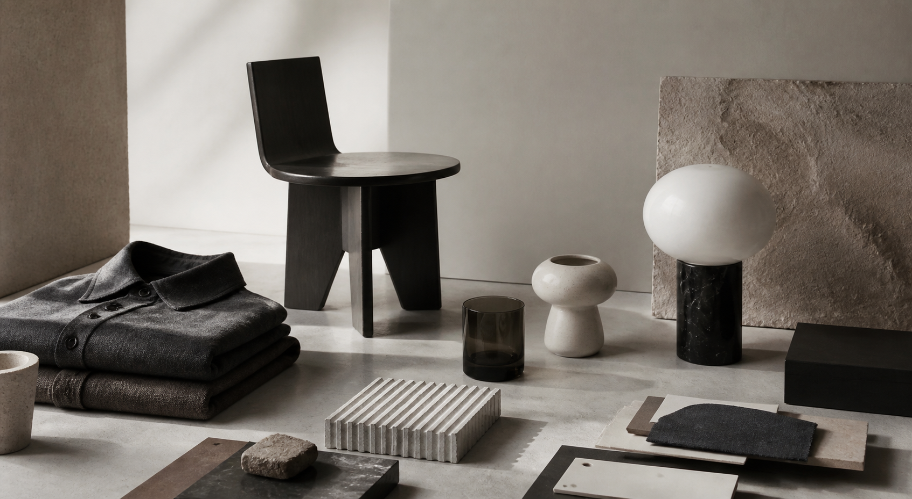
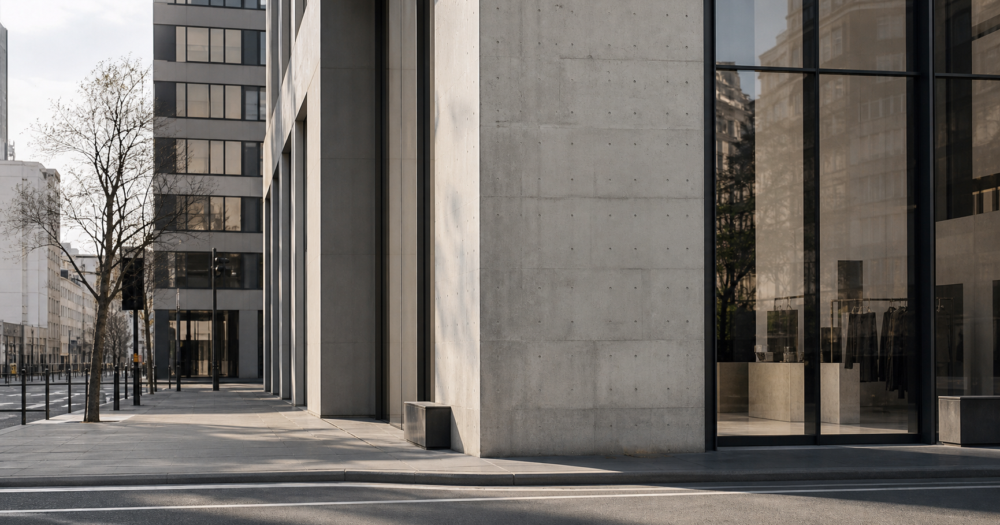
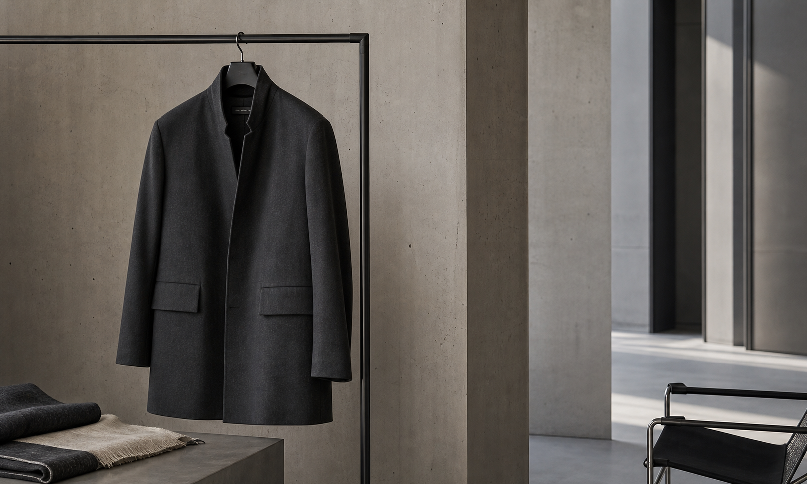
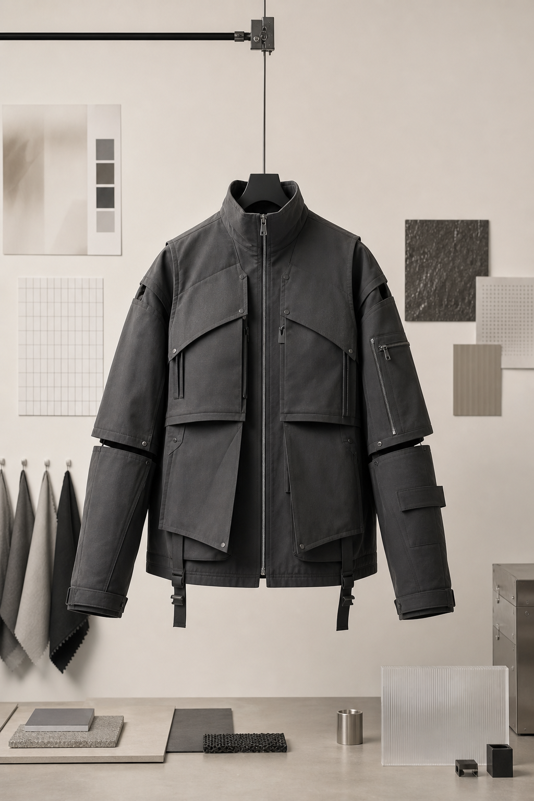
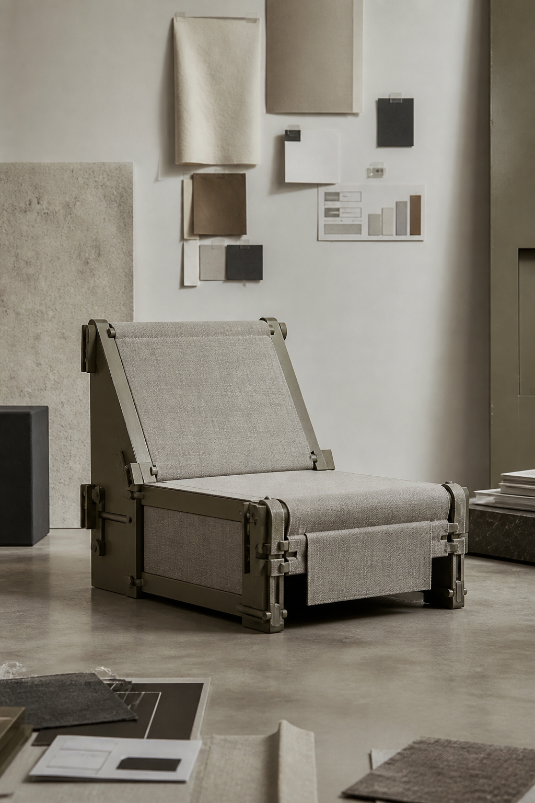
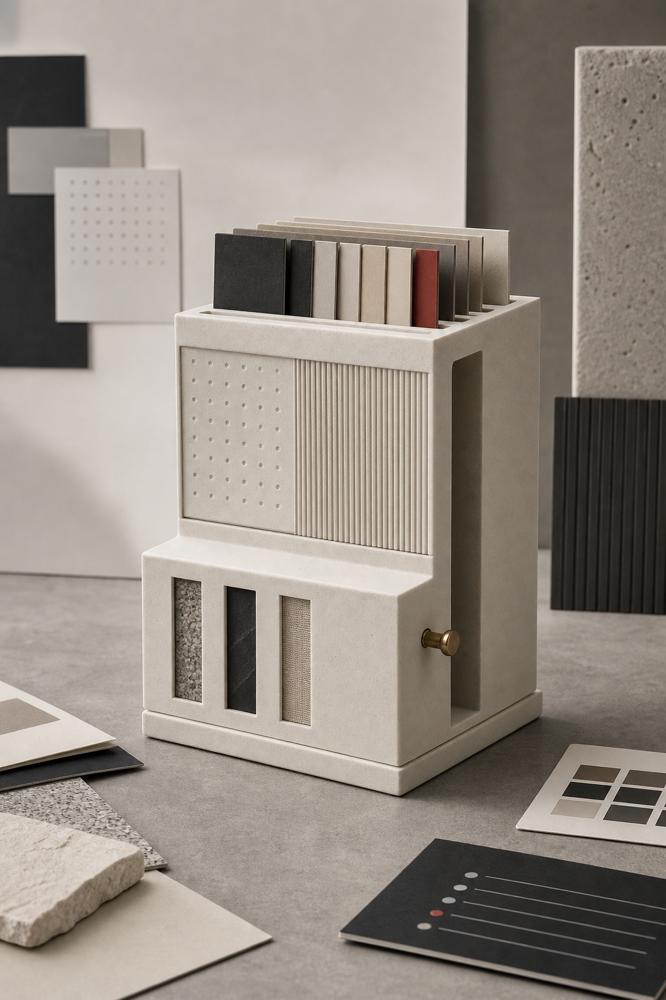

Home Background
빛, 공간, 소재감으로 사이트의 첫 분위기를 만드는 조용한 스튜디오 표면입니다.
- File
- images/Home/home-background.png
- Role
- Main visual background
Quiet studio surface
상품이 등장하기 전, 브랜드의 온도와 공기를 먼저 보여주기 위해 선택한 이미지입니다.
Archive / Home / BackgroundArchive
이 아카이브는 FFEE의 비주얼 시스템을 구성하는 이미지 소스, 소재 노트, 공간 레퍼런스를 보관합니다.

빛, 공간, 소재감으로 사이트의 첫 분위기를 만드는 조용한 스튜디오 표면입니다.
상품이 등장하기 전, 브랜드의 온도와 공기를 먼저 보여주기 위해 선택한 이미지입니다.
Archive / Home / Background
조용한 실내, 정돈된 표면, 구조적인 리듬을 브랜드 언어와 연결하는 공간 레퍼런스입니다.
직선, 부드러운 빛, 정적인 공기가 하나의 시각 시스템으로 정리되는 방식을 기록합니다.
Archive / Home / Interior
상품 이전에 표면, 실루엣, 질감으로 읽히는 의류 이미지입니다.
옷의 움직임, 그림자, 소재의 무게를 하나의 기록으로 변환합니다.
Archive / Home / Clothing
의류, 가구, 디자인 오브젝트를 하나의 큐레이션 시스템 안에 배치한 이미지입니다.
서로 다른 카테고리를 하나의 시각 언어에 속한 모듈로 보여줍니다.
Archive / Shop / EditorialWhat we keep

표면, 그림자, 리듬, 도시의 외부 분위기를 FFEE의 시각 방향과 연결하는 이미지입니다.
면, 선, 거리의 리듬이 브랜드의 배경 언어로 정리됩니다.
Archive / Home / City
원단, 실루엣, 소재의 무게, 조용한 볼륨을 읽기 위한 텍스처 레퍼런스입니다.
소재의 질감을 하나의 시각 기록으로 번역합니다.
Archive / Home / Texture


패션, 인테리어, 오브젝트의 다음 방향을 기록하는 콘셉트 이미지 묶음입니다.
패션, 인테리어, 오브젝트가 하나의 연결된 시각 시스템으로 확장됩니다.
Archive / Journal / Concepts